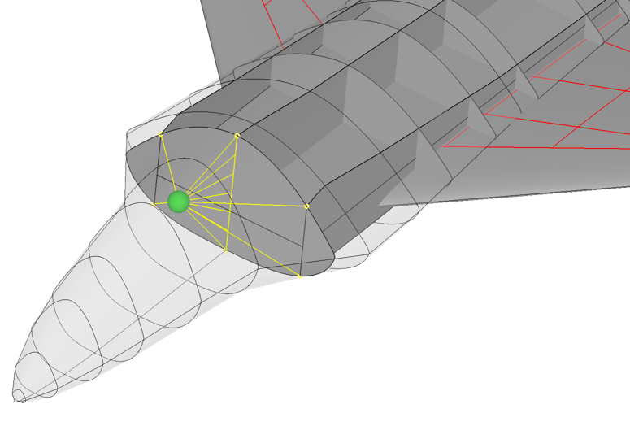

complexType · extension complexBaseType · all
Structural mount
In order to place non-structural masses in a model, it is necessary to define where these masses are attached to the structure. For example, you want to model a heavy on-board system, a piece of payload, a fuel tank, an engine, etc. as a fixed point mass. The first step would be to create a mass point at the center of gravity of your component. For some components this is directly available, the a fuel tank you would evaluate the volume and fill rate from its CPACS definition to get the CoG. The next step is to connect the mass point to the structure in a physically meaningful way to properly introduce any inertial loads generated by that mass into the structure. This purpose is fulfilled by the structural mounts. The logic of these mounts is to identify points or lines in the geometry created by the intersection of two referenced structural components ("fromStructureUID" and "toStructureUID"). These points or lines are then connected to the center of gravity of the mass point. The reasoning behind this is that the intersections between two structural objects (e.g., rib and spar) usually represent locations in the model that are stiff enough to support the additional loads from any equipment.
For example, the following figure shows a heavy system represented by a generic sphere attached to the structure by three structural mounts:

From left to right:
When creating a structural FEM model of this CPACS representation, a rigid body element (e.g. Nastran RBEx) can be generated based on the yellow lines. This is used, for example, to attach landing gear struts to the aircraft structure.
In short, structural mounts identify points or lines by intersecting two structural components, the resulting points or lines are then attached to a third component that references this structural mount as its attachment. Typically, as in the example above, components reference more than one structural mount as their attachment points.
| Name | Type | Constraints | Use | Default | Description |
|---|---|---|---|---|---|
@externalDataDirectory | xsd:string | optional | Directory of the external data file | ||
@externalDataNodePath | xsd:string | optional | Path of the node inside the external data file | ||
@externalFileName | xsd:string | optional | Name of the external data file | ||
@uID | xsd:ID | required | UID |
| Name | Type | Constraints | OccurrenceHow often the element may appear at this place. The schema writes it as minOccurs and maxOccurs on the declaration. | Default | Description |
|---|---|---|---|---|---|
| allThe children below may appear in any order. Each may appear at most once. | |||||
blockedDOF | integerBaseType | [1..1] required | Degrees of freedom blocked by the mount | ||
takeOnlyEndPoints | booleanBaseType | [1..1] required | If this value is set to true then only the end points of the intersection shall be included as nodes in the model | ||
fromStructureUID | stringUIDBaseType | [1..1] required | The UID for the first connection UID may include for wings: skin, sparUID, ribDefinitionUID, ribNumber, stringerUID, stingerNumber, and for fuselages: skinSegmentUID, frameUID, stringerUID, crossBeamUID, crossBeamStrutUID, longFloorBeamUID | ||
fromStructureCounter | integerBaseType | [0..1] optional | Optional counter to specify numbered items, e.g. ribs in a ribSet | ||
toStructureUID | stringUIDBaseType | [1..1] required | The UID for the second connection UID may include for wings: skin, sparUID, ribDefinitionUID, ribNumber, stringerUID, stingerNumber, and for fuselages: skinSegmentUID, frameUID, stringerUID, crossBeamUID, crossBeamStrutUID, longFloorBeamUID | ||
toStructureCounter | integerBaseType | [0..1] optional | Optional counter to specify numbered items, e.g. ribs in a ribSet | ||
cpacs/vehicles/aircraft/model/fuselages/fuselage/structure/fuselageStructuralMounts/fuselageStructuralMountcpacs/vehicles/aircraft/model/wings/wing/componentSegments/componentSegment/wingStructuralMounts/wingStructuralMountcpacs/vehicles/rotorcraft/model/fuselages/fuselage/structure/fuselageStructuralMounts/fuselageStructuralMountcpacs/vehicles/rotorcraft/model/wings/wing/componentSegments/componentSegment/wingStructuralMounts/wingStructuralMountcpacs/vehicles/rotorcraft/model/rotorBlades/rotorBlade/componentSegments/componentSegment/wingStructuralMounts/wingStructuralMount| Type | Name |
|---|---|
fuselageStructuralMountsType | fuselageStructuralMount |
wingStructuralMountsType | wingStructuralMount |